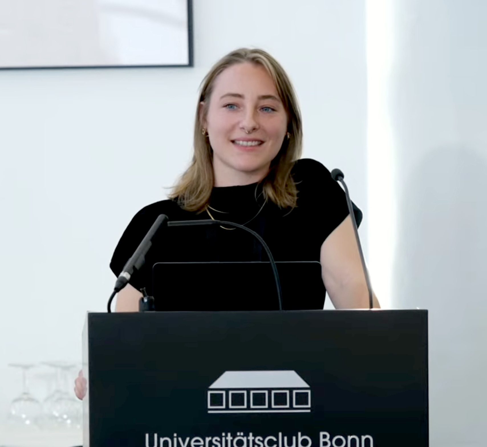
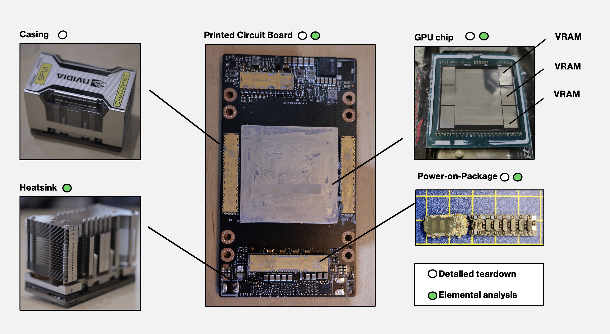

Sophia Falk
Researcher
PhD Candidate
Economist
Sustainable AI

About Me
I am a PhD student at the Bonn Sustainable AI Lab hosted at the Institute for Science and Ethics, Bonn University. In my research, I investigate the Sustainability of Artificial Intelligence (AI), AI Ethics, and Resource Economics. Based on that my dissertation project focuses on an integrated approach to Sustainable AI, addressing socio-environmental issues and the global distribution of AI life cycle stages. The project combines empirical findings on the Sustainability of AI with ethical awareness of responsibility for global issues related to AI development. Check out my research projects below, and if you would like to work with me, please contact me on LinkedIn or via e-mail!
Research & Publications
From FLOPs to Footprints: The Resource Cost of Artificial Intelligence
arXiv:2512.04142v1, 2025
This study quantifies the material footprint of AI model training by linking computational workloads to physical hardware needs on the GPU level.
try tool read preprintMore than Carbon: Cradle-to-Grave environmental impacts of GenAI training on the Nvidia A100 GPU
arXiv:2509.00093v3, 2025
This study quantifies the environmental impacts of training large language models on the Nvidia A100 GPU, going beyond carbon emissions to consider all relevant environmental impacts.
view dataset try tool read preprintThe Theoretical Potential of Data Center Waste Heat Recovery for Greenhouse Food Production in the U.S.: Ramifications for Sustainable Ai
10.2139/ssrn.5170348, 2025
This study explores reusing waste heat from U.S. data centers to grow food crops in greenhouses, matching data center cooling loads based on power consumption and the efficiency of cooling equipment to the location-dependent heating demands of tomato greenhouses.
read preprintTucano: Advancing Neural Text Generation for Portuguese
Patterns, 2025
This study takes on one of the biggest challenges in the world of NLP: creating sustainable and equitable access to capable language models for low-resource languages.
view projectThe attribution problem of a seemingly intangible industry
Environmental Challenges, 2024
By using the planetary boundary framework this paper show AI's environmental impacts beyond carbon emissions on 6 out of 9 PBs in a variety of complex ways. Further, it analyses how the EU AI Act fails to address the environmental challanges posed by AI development.
read paperTeenyTinyLlama: open-source tiny language models
Machine Learning With Applications, 2024
TeenyTinyLlama is a pair of compact models for Brazilian Portuguese text generation. We release them under the permissive Apache 2.0 license on GitHub and Hugging Face for community use and further development.
view projectChallenging AI for Sustainability: What ought it mean?
AI & Ethics, 2023
This paper argues that the terms ‘Sustainable artificial intelligence (AI)’ in general and ‘Sustainability of AI’ in particular are overused to the extent that they have lost their meaning. We aim to create a common understanding of what the ‘AI for Sustainability’ movement ought to mean.
read paperIn the Media

Interviews & Press Articles
Materiality of AI
AI's materiality is often overlooked, yet it is crucial to understand the physical resources and environmental impacts associated with AI development. By examining the material footprint of AI, we can gain insights into the sustainability challenges in the AI industry beyond energy consumption. This section explores the material aspects of AI at the GPU level, their resource requirements, and environmental implications.

Physical infrastructure of AI – The dissassembled Nvidia A100 SXM 40 GB GPU. The heatsink, printed circuit board, GPU chip and Power-on-Packages were analysed via ICP-OES to determine the elemental composition of the AI hardware (own pictures).
From FLOPs to Footprints
Quantifying AI's material footprint requires moving beyond energy consumption to include hardware demands. By analyzing the elemental composition of the Nvidia A100 GPU — identifying 32 elements dominated by copper, iron, tin, silicon, and nickel — training one round of GPT-4 is estimated to require up to 8,800 GPUs, corresponding to 7 tons of hazardous elements with well-documented toxic traits.
To understand both the computational demands and environmental costs of AI development, calculate the GPU requirements and material resources needed to train your AI model. Our tool provides two modes:
- Training Estimation: Input your model parameters to estimate compute requirements in terms of GPU count and their aggregated material demand.
- Direct Hardware Analysis: Enter a GPU count to instantly see the material footprint of x NVIDIA A100s.
Convert GPU computation into material demand 👣
Life Cycle Assessment Tool for GPUs
As broader part of the research on the materiality of AI, we dissassembled and documented multiple GPU generations and models. The calculator published by Hubblo estimates the embedded impacts (manufacturing, distribution, end-of-life) of these graphics cards based on 16 Product Environmental Footprint (PEF) impact criteria (excluding the use phase). The assessment is based on the parametric model developed for ADEME by Tide, Hubblo, and TND as part of research published in 2025 (Falk et al., 2025). The model is the result of extensive data collection, including the dismantling of a dozen graphics cards and the performance of a dozen elemental analyses:
Estimate the embedded life cycle impacts of GPUs 📐